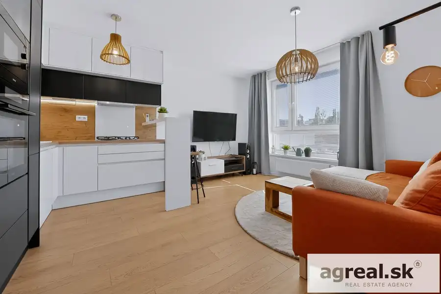
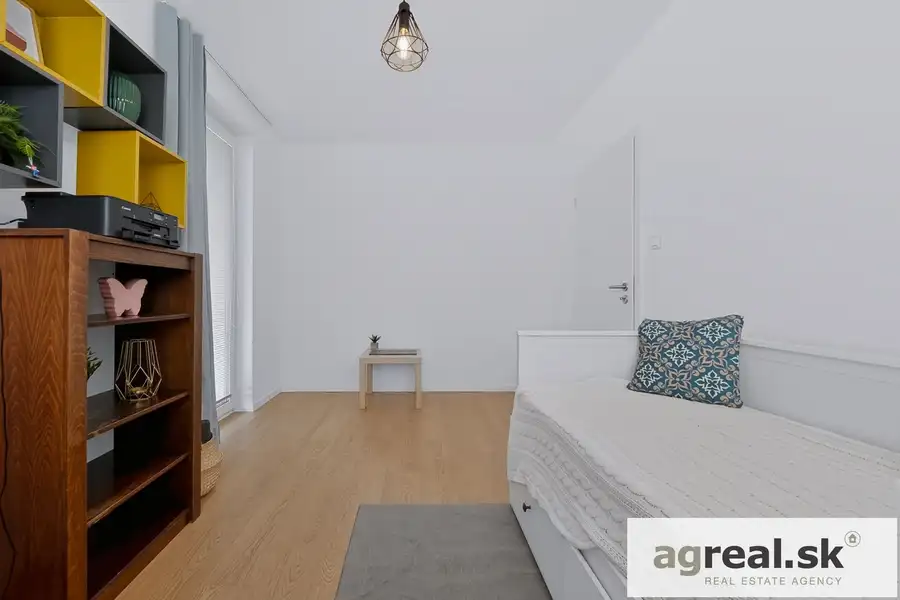
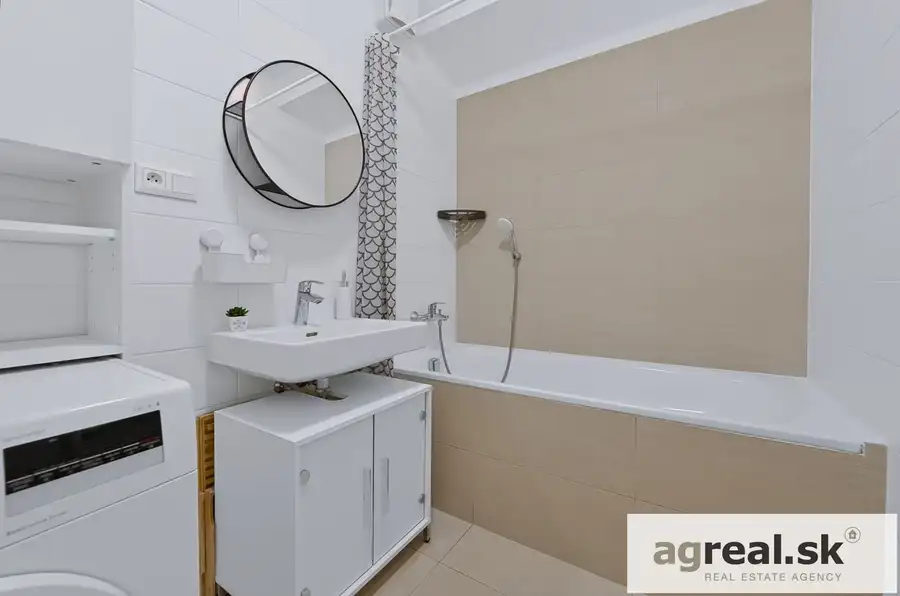
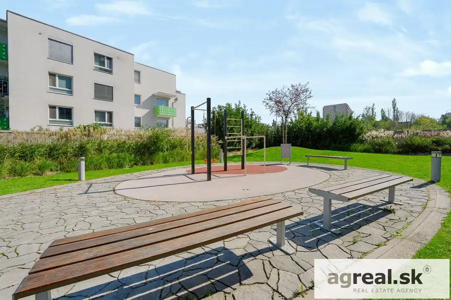
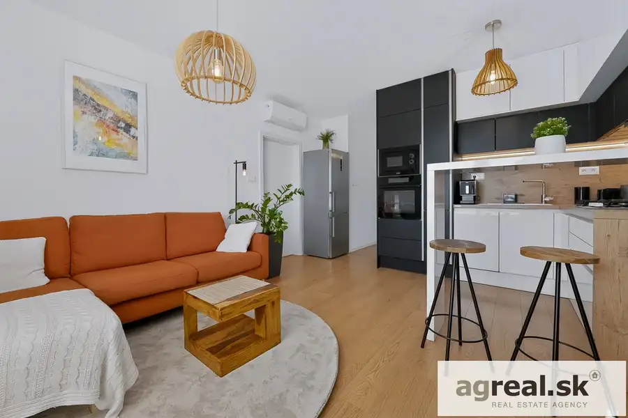
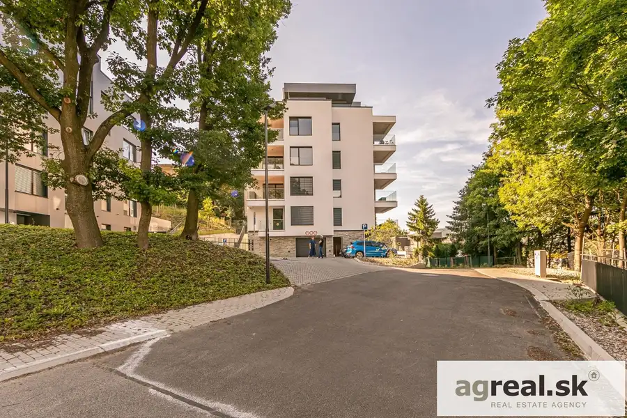
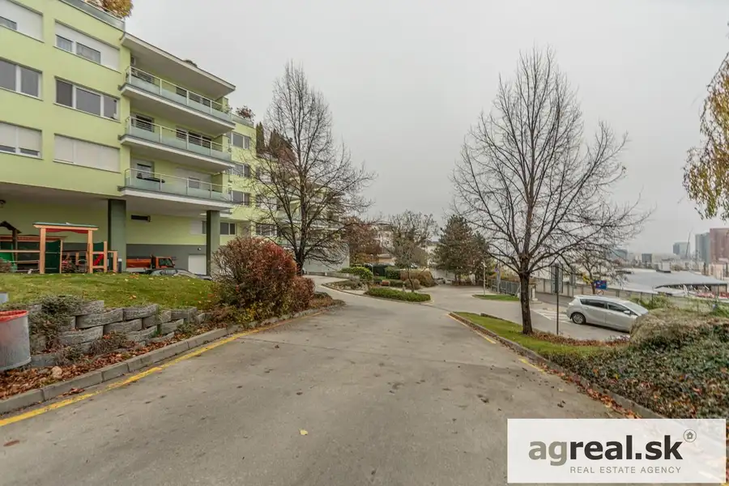
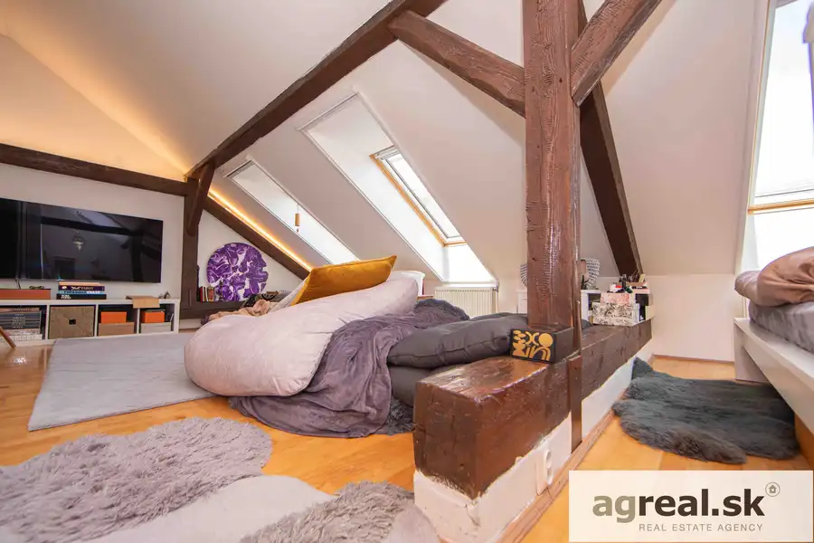

3-izbový byt v novostavbe TAMMI od YIT s balkónom, možnosť garáže
Dúbravka, Bratislava





- Dispozícia3-izbový
- Plocha64.43 m²
- Poschodie4. z 14
- StavNovostavba
- VlastníctvoOsobné
O nehnuteľnosti
Ponúkame na prenájom slnečný 3- izb. apartmán (NP) o výmere 64,43 m² + balkón 12,79 m². Byt sa nachádza na 4. posch. /14 s výťahom, má výbornú dispozíciu a orientáciu na západ (izby) a na juh (kuchyňa + obývačka), takže je svetlý a slnečný. Bytový dom TAMMI bol dokončený v r. 2019, developer YIT, 4 byty na poschodí, slušní susedia. K bytu je možné prenajať garážové státie v suteréne domu o výmere 12 m² - výťahom sa dostanete do bytu suchou nohou. Bytový dom sa nachádza v upravenom a stabilizovanom prostredí, v bezprostrednej blízkosti supermarketu TESCO, s kompletnou občianskou vybavenosťou v okolí. DISPOZÍCIA BYTU A VYBAVENIE:- vstupná chodba (nábytok s vešiakovou stenou a botníkom), samostatná toaleta s umývadlom- obývačka s jedálňou a kuchyňou (kompletne vybavená kuchyňa Gorenje, plynová varná doska, umývačka 45 cm, TV Samsung 45 palcov, Hi-Fi reproduktory, nábytok, jedálenský stôl + stoličky), klimatizácia Gree- kúpeľňa s vaňou, práčka Bosch- spálňa (manželská posteľ, roll-door), výstup na balkón, klimatizácia Gree- detská izba/pracovňa (1 x posteľ, skrinky, pracovný stôl, tlačiareň), výstup na balkónOkolie ponúka kompletnú občiansku vybavenosť (školy - štátne aj British International School, škôlky, MHD, dobré dopravné napojenie na diaľničný obchvat, obchody, napr. TESCO, OD Saratov, Bory Mall, Hornbach, nemocnica Bory. Parkovacie možnosti v okolí domu sú dobré. Dobré napojenie na obchvat, do centra mesta autom za 12 minút, MHD 25 minút (z konečnej električiek v Dúbravke).Priamo v dome sa nachádza exteriérové detské ihrisko s grilovacím altánkom a vodou iba pre obyvateľov domu. LOKALITA:Bytový dom sa nachádza v obľúbenej lokalite Bratislavy – Dúbravka. Vzhľadom na kompletnú občiansku vybavenosť, dostupnosť materských a základných škôl (BIS), mnohé ihriská, športoviská je byt ideálny pre jednotlivca alebo pár. Dobrá dostupnosť do centra a na obchvat mesta. V blízkosti sa nachádza kúpalisko, zastávky MHD - vrátane električky, SC Bory Mall a nová moderná nemocnica BORY sú vzdialené iba 4 km.Cena: 900,-EUR mesačne + zálohové platby 200,- EUR mesačne + garáž 50,- EUR mesačneKontakt: 0907/ 201 692, ilja.miskovic@agreal.skV apartmáne nie je možné zriadiť prechodný pobyt pre cudzinca.
Parametre
- Bezpečnosť
- Bezpečnostné dvere
- Cena vrátane energií
- Nie
- Doprava
- MHD, Cyklistická infraštruktúra, Diaľnica
- Druh
- 3 izbový byt
- Dátum zverejnenia
- 07. 10. 2026
- Energetický certifikát budovy
- V príprave
- Energie
- 200
- Orientácia
- Južná, Západná
- Podlažie
- 4
- Počet balkónov
- 1
- Počet izieb / miestností
- 3
- Počet nadzemných podlaží
- 14
- Počet parkovacích miest v garáži
- 1
- Počet spální
- 2
- Prechodová izba
- Áno
- Príprava teplej vody
- Súbežne s ÚK
- Rok kolaudácie
- 2019
- Rok výstavby
- 2019
- Stav nehnuteľnosti
- Novostavba
- Telekomunikácie
- Internet, Káblová TV
- Typ
- Prenájom
- Typ konštrukcie
- Tehlová
- Umiestnenie
- Ďalšie nadzemné podlažie
- Vlastníctvo
- Osobné
- Vybavenie
- Výťah, Balkón, Garážové státie, Záhrada, Detské ihrisko
- Vykurovanie
- Ústredné, Klimatizacia
- Zdroj tepla
- Zemný plyn
- Úžitková plocha
- 64.43 m²
Kde to je


Mohlo by Vás zaujímať

BytNové 340 000 €2-izbový byt v novostavbe Rezidencia Búdkova s možnosťou garáže Staré Mesto, Bratislava 2-izbový53.72 m²1. podlažie
BytNové 295 000 €Byt 116,60 m² (2-3-izb.) v bytovom dome Tupého s klimatizáciou, možnosť dvojgaráže Nové Mesto, Bratislava 3-izbový116.6 m²1. podlažie
BytNové 259 000 €2-izbový podkrovný byt na 2.posch., Ferienčíkova ulica, Staré Mesto. Staré Mesto, Bratislava 2-izbový56.1 m²2. podlažie